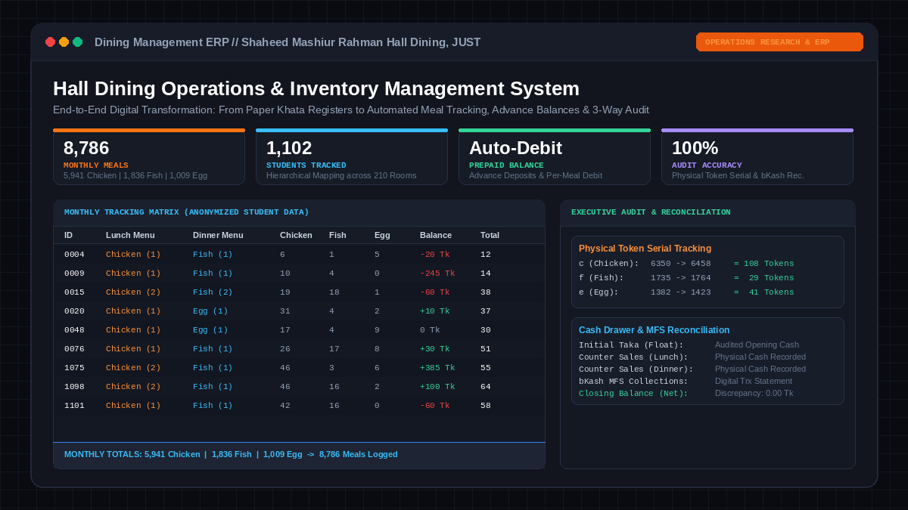

Hall Dining Operations & Inventory Management System
A transparent, formula-level breakdown of the custom spreadsheet engine built and deployed during tenure as Dining Manager at Shaheed Mashiur Rahman Hall, Jashore University of Science and Technology (JUST). Replaced a bulky, handwritten paper register with an automated system tracking ~9,000 monthly meals across 1,102 residents in 210 four-student rooms—featuring direct Student ID lookups, flexible negative/advance balance accounts to eliminate student dining churn, next-day kitchen protein forecasting, and real-time oversight for the Hall Provost Body.
Logged across 31 days: 5,941 Chicken, 1,836 Fish, and 1,009 Egg meals with 100% audit balance.
210 residential rooms (4 students per room) searchable instantly by Student ID.
64,712 binary presence flags, 4,477 multi-criteria aggregations, and 1,093 form-join lookups.
Daily reconciliation balancing physical token serials (L4-K4) × ৳45 to cash float and bKash mobile receipts.
Master Tracking Matrix & Executive Operations Dashboard

Figure 1: High-level view of the 1,111-row dual-slot meal matrix (left) paired with the interactive audit and reconciliation terminal (right).
How Dining Worked: The Daily Next-Day Token Routine
In our hall, dining operations follow a strict daily routine: students come to the dining counter in the evening to pre-book and purchase their meal tokens for the next day (selecting lunch, dinner, or both).
Before introducing this Google Sheets system, the entire hall was managed with a big, book-like bundle of handwritten paper registers arranged room by room. Every evening when hundreds of students queued up at the counter, logging a single purchase required a tedious 4-step manual hunt:
- Skim through thick stacks of paper pages to locate the student's Room Number.
- Scan the 4 students residing inside that room to find the student's name.
- Navigate to tomorrow's date column and handwrite what protein they wanted (
cfor Chicken,ffor Fish,eggfor Egg). - Collect cash and issue the physical token.
With the Google Sheet: The manager simply searches the resident's Student ID directly, picks their meal choice from a dropdown, and hands over the physical token in seconds. Transaction time per student collapsed from minutes of page skimming to mere seconds.
The Real Ground Bottlenecks Solved by the Spreadsheet
Skimming through 210 room pages and 4 names per room for hundreds of students created massive evening queues. Searching the Student ID directly on the sheet completely eliminated counter congestion.
Students returning late to the hall called managers on the phone asking for tokens, promising to pay tomorrow or sending bKash. Paper registers couldn't track verbal requests; the cloud sheet allowed managers to book and log remote transactions from anywhere in real time.
Students without physical cash at counter time previously couldn't buy tokens, forcing them to eat outside and causing dining churn. The sheet created a personal balance account for everyone: students could deposit advance money or run a documented negative balance to pay later without skipping meals.
Previously, the hall authority (Provost body) had no updated meal sheet or visibility into dining volume. The live cloud sheet enabled provosts to open the dashboard from their devices at any time to review daily turnout and monthly trends, establishing institutional transparency.
Because students booked meals the evening before, the spreadsheet's bottom summary formulas instantly computed exact headcounts for Chicken, Fish, and Egg for tomorrow. Kitchen cooks and bazaar purchasers received precise figures before going to the morning market, eliminating cooked food spoilage and meal shortages.
Spreadsheet Architecture: Two Synchronized Sheets
Rather than relying on proprietary software that requires expensive server hosting and licensing fees, the entire dining operation was engineered within Google Sheets using two interdependent worksheets:
January, 2030
1,111 Rows × 136 Columns
The core transaction database. Columns A–D map Room Number, Resident Name, Department, and Student ID for 1,102 students across 210 rooms. Columns E through DT represent 31 calendar days, where every single day is split into Lunch and Dinner. Each meal slot consists of two paired columns: a qualitative choice column (e.g. Chicken, Egg, Fish) immediately followed by an automated binary flag column. Rows 1107–1111 contain daily kitchen demand aggregation sums, and Column EB tracks each student's running financial balance.
Dashboard
998 Rows × 26 Columns
The operational & administrative console. Houses three functional modules: (1) an automated vertical turnout calendar transposing horizontal data from the master sheet for the Hall Provost Body; (2) an interactive on-demand student audit desk for resolving resident disputes in real-time; and (3) a closed-loop financial and physical token serial reconciliation ledger.
Formulas Implemented & How Each Solved a Bottleneck
Below are the exact mathematical and relational formulas running in the live spreadsheet, detailing the technical syntax, cell locations, and the operational bottlenecks each formula eliminated.
Dropdown Meal Selection & Binary Presence Indicator
January, 2030 • Columns: F, H, J, L, N, P, ... (Rows 5 to 1106)
The Operational Bottleneck: In the paper register, staff had to locate the room, find the student, and handwrite protein letters. On Google Sheets, we replaced manual writing with quick dropdown menus. However, evaluating raw text strings ("Chicken", "Fish") across 68,000+ cells caused the browser to lag and freeze during peak evening counter hours.
How the Formula Helped: Placed in alternate helper columns adjacent to every dropdown slot, this formula immediately converts any meal choice into an integer bit: 1 if a meal is selected, and 0 if absent. Downstream calculation and vertical sums execute blazing-fast arithmetic sums on pure integers rather than parsing heavy strings, keeping the sheet responsive even during peak dining rushes.
Next-Day Kitchen Protein Procurement Forecasting
January, 2030 • Cells: E1107:DT1111
The Operational Bottleneck: The hall kitchen serves two distinct proteins at lunch (Chicken vs. Egg) and two at dinner (Fish vs. Egg). Because tokens were purchased the evening before, cooks previously had to guess how many students would actually show up for Chicken vs. Fish. If they guessed wrong, meals ran short or dozens of kilograms of expensive meat spoiled.
How the Formula Helped: The moment the evening counter closes, these formulas sum the next day's bookings across the binary flags. Cooks and grocery buyers wake up with exact figures (e.g. 242 Chicken, 20 Egg, 62 Fish) before heading to the morning bazaar. Cooked food spoilage was reduced to near zero, and students never faced meal shortages.
Personal Balance Ledger: Preventing Student Dining Churn
January, 2030 • Column: EB (money) (Rows 5 to 1106)
The Operational Bottleneck: University students frequently don't have physical cash at the exact moment token booking opens. Under the strict cash-only paper rule, no cash meant no meal—encouraging students to skip hall dining and spend money eating outside, which led to dining churn. Moreover, students hated carrying small change every single day.
How the Formula Helped: The sheet introduced an active financial balance account for every resident. Students could deposit advance money (e.g. ৳500 or ৳1,000) so they never had to bring cash to the counter. Crucially, if a student was temporarily out of money, the manager simply deducted ৳45 into a documented negative balance (e.g. -৳45). The student got their meal without embarrassment, the debt was transparently tracked, and dining churn dropped to zero. Because Google Sheets maintains full version history, every transaction was auditable.
Dynamic Resident Registration via Form Response Lookup
January, 2030 • Column: B5:B1106
The Operational Bottleneck: Manually handwriting 1,102 student names, departments, and room allocations into paper registers took days and generated spelling errors and record mismatches.
How the Formula Helped: Connects the hall dining registration Google Form responses (Response tab) directly into the master matrix. Entering a student's ID in cell D5 triggers an instantaneous lookup against form responses in column B, returning the verified resident name from column C with zero clerical intervention.
Instant On-Demand Student ID Audit Terminal
Dashboard • Interactive Terminal: G4:H10
The Operational Bottleneck: Whenever a student called the manager or visited the counter questioning their monthly meal deductions or balance, managers previously had to scan through 210 paper room pages while the student waited.
How the Formula Helped: Created an instant interactive counter terminal. By typing the student's ID into cell G5, the formula searches the master sheet and displays the student's exact monthly Chicken, Egg, Fish, and total meal counts on screen in under 2 seconds right in front of the student.
The Master 3-Way Evening Counter Reconciliation Formula
Dashboard • Audit Module: J3:O14
Mathematical Breakdown:
(M11 - M10) * 45: Multiplies total distributed meal tokens by the fixed unit price (৳45 per meal).+ (K11 - K10): Computes the cash float variance (Closing cash drawer balanceK11minus opening cash floatK10).- O10: Offsets digital mobile financial payments received via bKash (from late students booking over the phone).+ O11 * 45: Accounts for authorized guest and emergency staff meal tokens.
How the Formula Helped: Counter managers handled a mix of physical cash, late-night phone call bKash transfers, and plastic tokens. This formula enforced strict mathematical conservation of revenue: total physical tokens disbursed had to exactly match cash float delta plus digital bKash deposits. At the end of every evening shift, cell K14 had to equal exactly 0 before staff closed the counter. Missing cash and unrecorded tokens were eliminated.
Dynamic Headcount Calendar: Real-Time Provost Oversight
Dashboard • Summary Calendar: A4:D34
The Operational Bottleneck: The hall authority (Provost body) previously had no access to live dining data. They could not inspect meal trends, verify daily dining participation, or monitor hall kitchen activity without requesting manual paper reports.
How the Formula Helped: Converts the master sheet's 136-column horizontal timeline into a clean 31-day vertical calendar on the Dashboard. The Provost body could open the shared sheet link at any time from their laptops or phones to review daily lunch and dinner turnout, total monthly meal volume, and operational stability with complete transparency.
Previous Handwritten System vs. Formula-Driven Spreadsheet
| Operational Dimension | Previous Handwritten Register | Formula-Driven Spreadsheet ERP |
|---|---|---|
| Token Purchase Workflow | Skimming through thick paper bundle to find Room No., scanning 4 names, handwriting meal codes | Instant Student ID search, dropdown selection, token issued in seconds |
| Late Arrivals & Phone Bookings | Verbal promises and late calls easily forgotten or lost; untracked meals | Managers book remotely on the sheet; bKash transactions logged instantly |
| Student Cash Constraints & Churn | No cash = no meal; students skipped hall food to eat outside, leading to churn | Personal running balance (Col EB) allows documented credit (-৳45) and advance deposits |
| Next-Day Kitchen Procurement | Cooks guessed demand blindly; frequent food shortages or perishables spoilage | Exact headcounts computed automatically right after evening booking closes (=SUMIF) |
| Provost Body Oversight | No access to live data; authorities relied on delayed manual paperwork | Live dashboard accessible anytime on phones/laptops for daily & monthly review |
| Counter Revenue Balancing | Untracked tokens; drawer cash and bKash reconciliations unverified | Master formula K14 enforces ৳0.00 balance across serials, cash & bKash |